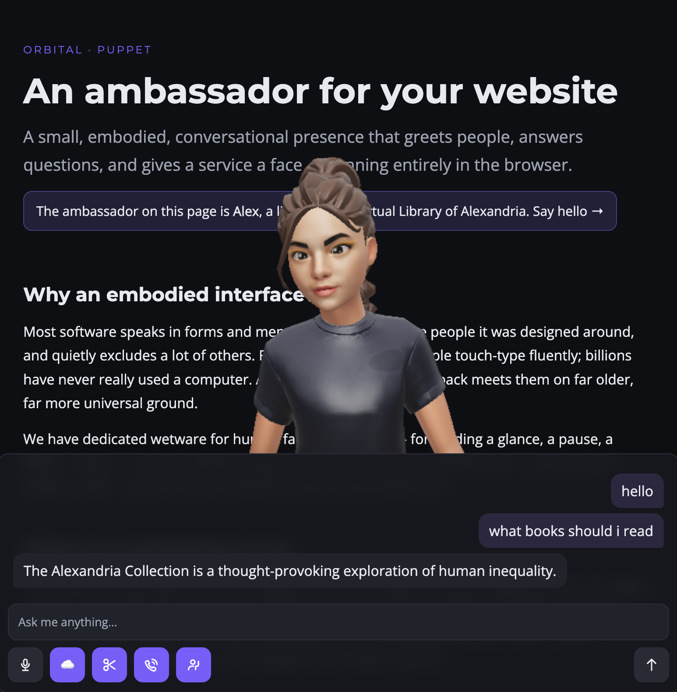

orbital · puppet
An ambassador for your website
A small, embodied, conversational presence that greets people, answers questions, and gives a service a face — running entirely in the browser.
The ambassador on this page is Alex, a librarian in a virtual Library of Alexandria. Say hello →

Why an embodied interface?
Most software speaks in forms and menus. That works for the people it was designed around, and quietly excludes a lot of others. Fewer than one in five people touch-type fluently; billions have never really used a computer. A face that listens and talks back meets them on far older, far more universal ground.
We have dedicated wetware for human faces and voices — for reading a glance, a pause, a flicker of expression. An embodied agent can borrow that channel. Even for seasoned users, presence can carry warmth and attention that a chat bubble can't.
What an ambassador is for
Think of it as a friendly front door. A greeter that can explain a product, walk someone through a process, hand off to a human when it matters, or simply make a site feel less like a vending machine and more like a place with someone in it. It is not trying to replace your interface — it sits beside it, an optional way in for people who'd rather just ask.
The hard parts (honestly)
Aliveness is fiddly. Convincing presence is a balancing act of many small things at once: mouth movement synced to the actual audio, breath and pauses, emotion that fits the words, blinks and small facial tics, gaze that finds you, body language that matches the conversation — all while staying clear of the uncanny valley, where almost human reads as unsettling rather than warm.
Then there's the plumbing: low-latency speech in and out, a language model light enough to run on a phone or honest enough to call a service, letting a person interrupt mid-sentence (“barge-in”), and recovering accurate lip-sync timing from generated speech. This puppet does all of it client-side, with no build step — see the repository and its devlog.